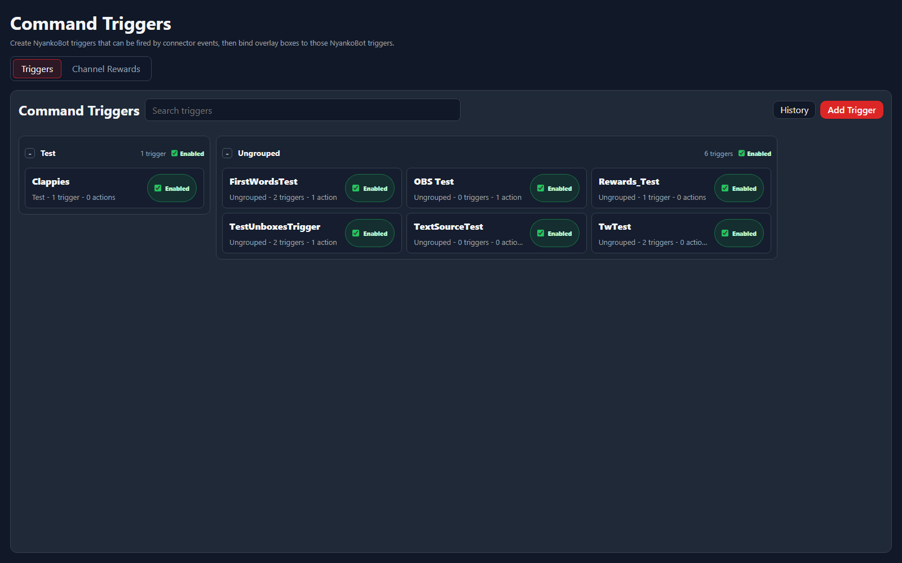

Setup Page
Command Triggers
Command Triggers are NyankoBot-owned trigger definitions that can be fired by connector events, synthetic events, Stream Deck calls, or manual actions, then used by action flows and overlay bindings. See Platform Events and the Action Reference for the current picker options.
Trigger List

The list groups saved triggers, shows whether they are enabled, and gives quick access to history and creation.
Search triggersFilters the trigger list by name, group, or details.HistoryOpens recent trigger activity so you can debug why something did or did not fire.Add TriggerCreates a new NyankoBot trigger definition.EnabledShows whether the saved trigger can currently run.Trigger Editor
The editor is where a trigger gets its name, grouping, enable state, cooldowns, connector event bindings, and optional action behavior.
Trigger InfoName, group, enabled state, and basic trigger identity.CooldownsGlobal, per-user, and role-based timing limits.TriggersConnector events, synthetic chat events such as Command or First Words, timers, Stream Deck calls, or manual trigger sources.ActionsWork NyankoBot should run when this trigger fires. The Add Action dialog is grouped by provider and action category.HistoryShows the matched command trigger, payload, resolved text values, and action arguments after execution.Actions And Overlay Binding
Command Triggers can run actions directly, trigger overlay bindings, or trigger a specific box source. Action forms are schema-driven, so normal actions expose named fields instead of asking for a raw request payload.
- Use connector events to decide when a trigger fires. Twitch and Kick chat events are normalized before matching, so synthetic Command and First Words triggers behave like chat-based triggers.
- Use cooldowns and permissions for user-triggered chat flows. Broadcaster runs bypass cooldowns.
- Use Send Message for chat output. It supports bot/broadcaster account choices and can send back to the triggering platform before trying selected fallback platforms.
- Use connector actions, such as Twitch, Kick, OBS, or Streamer.bot actions, when the connector can perform platform work. Connection selectors are filtered to compatible enabled connector types.
- Use Translator to translate a token such as
{{text}}, then store the result as a session argument or persistent variable. - Use Trigger Binding to fire an overlay-level or box-level binding from an action.
- Use Trigger Box Source to manually fire a source variation on a selected overlay/box while respecting source timing and tiering rules.
For the complete built-in action list, connector request categories, and result mapping, open the Action Reference. Twitch Channel Points lifecycle events and other platform events are summarized in Platform Events.